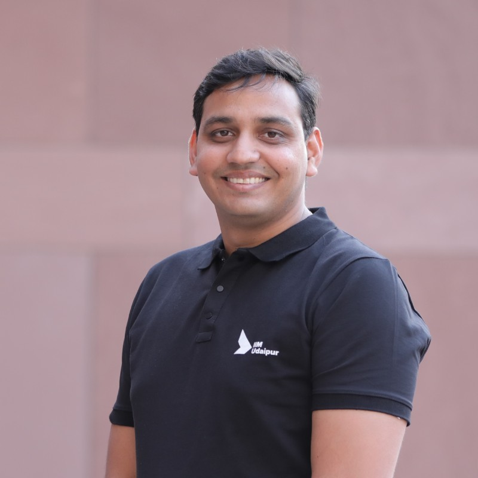

Your Trusted Financial Partner
I’m Ronak Dagliya, a Chartered Accountant with a Master’s degree in Business Management from IIM Udaipur and 14+ years of experience in finance, strategy, and business transformation.
Having worked with leading multinational organizations, I help businesses gain financial clarity, reduce revenue leakage, and optimize costs. My focus is on turning financial data into actionable insights that drive better decisions and long-term growth.
With experience across industries including Power, FMCG, Telecommunications, Refineries, and Warehousing, I bring a practical and holistic perspective to financial management.
What I help businesses with:
- Digital Transformation – Implementing tools like Power BI and integrating ERP systems for real-time insights.
- Financial Planning & Analysis (FP&A) – Budgeting, forecasting, and performance analysis for informed decision-making.
- Business & Project Financial Modelling – Creating robust models for tenders, new setups, and strategic initiatives.
- ESG Reporting – Supporting businesses in aligning with sustainability and compliance goals.
Today, as a trusted finance practitioner, I focus on building strong relationships with businesses and acting as a dependable partner in their growth journey. My goal is to empower organizations with actionable insights and innovative solutions that drive efficiency and profitability.
Education
Chartered Accountant
2008 – 2011Taxation, audit and accounting.
MBA — IIM Udaipur
2022-2024Strategy, leadership and decision-making.
CPA
OngoingUS taxation, auditing and accounting.
Continuous Learning
OngoingUpskilling in advisory, finance and digital tools.
Professional Journey
PwC
Early Career: 2008 - 2012Audits - Statutory, SOX, Foreign reportings
L&T
2012 - 2016MIS, project management, AR, Treasury
Secure Meters
2016 - 2025Business Partnering, MIS and Treasury
BG Advisors
Nov 2025 – PresentPartnered advisory practice supporting businesses